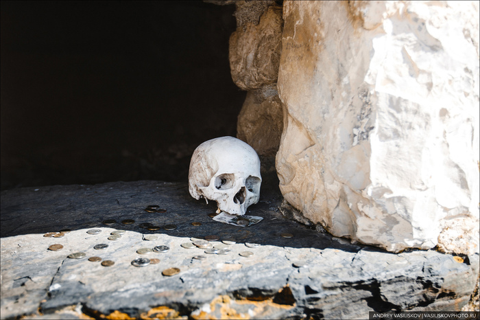
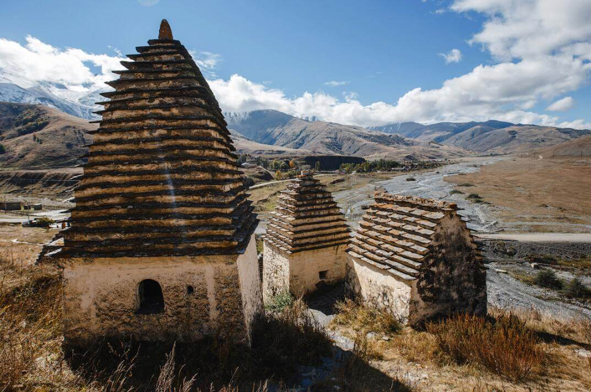

Даргавс — город мёртвых в Северной Осетии, который таит в себе много тайн и легенд
Одним из жутких и загадочных мест России является поселение Даргавс. Оно находится посреди гор Кавказа. Этот загадочный городок на самом деле является кладбищем, состоящим только лишь из склепов и усыпальниц. Неудивительно, что про это место ходит много легенд. По некоторым данным, люди прошлого боялись этого места, ведь они считали, что кто пойдёт туда — живым больше не вернётся.
Строение усыпальниц Даргавса
Даргавс в переводе с осетинского означает «защитник ущелья». Самый крупный некрополь Кавказа находится на зелёном холме, усыпанном множеством крошечных зданий. Они и являются как раз-таки склепами. Всего в Даргавсе около 97 склепов. За этими зданиями находится наполовину разрушенная сторожевая башня. По легендам, она предназначается для охраны упокоившихся душ.
Сами же усыпальницы были круглой формы с острой крышей. Они имели около 2-4 этажей, а те, что поменьше только лишь плоские стены, порой совсем без крыш. Внутри массивных склепов находится большой свод в виде креста, что поддерживает крышу. Это четырёхугольники с крышами, состоящими из ступеней. Такая форма необходима для того, чтобы вода стекала наружу и не заливала усыпальницы.
Стены усыпальниц практически все построены из камней и хорошо заштукатурены глиной или извёсткой. В каждом здании этого города есть маленькое отверстие, скорее всего, проход. Много лет спустя такие проходы даже запирались на замок. Эти отверстия настолько маленькие, что обычному человеку не под силу вылезть через них.
Организация похорон в склепах
Жители этого города хоронили членов своей семьи обязательно одетыми и с вещами. У каждого семейства был свой склеп. Чем он был выше и больше, вероятнее, тем больше людей было там захоронено. Где-то даже есть камеры. Конечно, есть и обычные простые склепы. Они предназначались для людей, оставшихся без семьи, или чужих людей.
Тела внутри усыпальниц обычно захоронялись не в гробах, а в коробах из дерева, напоминающих лодку (или они просто были найдены рядом). Но откуда там взяться лодкам, если поблизости нет водоёмов? По верованиям, считалось, что душа должна перейти реку, чтобы благополучно уйти на небеса.
Также является странным существование колодцев. Люди кидали монеты в него, и если был слышен удар монеты о дно, то это значило, что душа мёртвого уже на небесах.
Легенды 1 По одной из легенд, когда-то в их население прибыла девушка необычной красоты. Никто не знал откуда она явилась. Весь мужской пол забыл о своих возлюбленных и начал борьбу друг с другом за сердце этой красавицы. В поединках гибли люди. Тогда эту девушку отвели на совет. Но и у всех мужчин совета, загорелись глаза при виде этой девушки. Женщинам этого поселения надоела эта ситуация, и они решили сами её прогнать и объявить всем, что она ведьма. Но мужское население не хотело расставаться с незнакомкой, не хотело, чтобы она досталась другим мужчинам, поэтому они решили её убить. Она должна была достаться только Богу. Сразу после её смерти в поселение грянула эпидемия чумы. Но земля отвергала их наружу. Так и появились склепы.
2 Другая легенда гласит, что любой человек, побывавший там, не будет больше жить. Поэтому местные жители избегают его, а всех любопытствующих нарекают пропащими людьми, жизнь которых будет недолгой. И тут стоит вспомнить об эпидемии чумы в 18 веке. Население сократилось из-за неё с 20 до 16 тысяч человек. И для того, чтобы больные не заражали никого, они уходили добровольно всей семьёй в эти склепы и больше не возвращались. Запасы еды и воды быстро заканчивались, и в скором времени люди умирали одновременно от голода и страха заразиться холерой. Их тела оставались в их хижинах.
На сегодняшний день город считается самым жутким «городом мёртвых».
Туристическая деятельность в Даргавсе В советское время этот город считался туристическим. Сюда часто прибывали люди с разных частей света. Там даже стоял киоск с билетами под управлением местной бабушки. В Даргавсе множество историко-архитектурных памятников всех времён, и для государства, и для археологов — это место имеет важное значение в изучении прошлого осетинского народа. Благодаря археологам, современное поколение может представить, как жили люди много столетий назад.
Как вспоминает археолог Владимир Кузнецов:
«В 1967 мы первый раз направились туда для исследования и раскопок. Медицина того времени не давала нам ответ, может ли снова там возродиться чума. К счастью, они отсутствовали. Но даже после этого никто из нас не снял резиновые перчатки. Но всё-таки были смельчаки, бравировавшие голыми руками».
Несмотря на интересную историю, популярность и многообразие памятников, на сегодняшний день этот город полностью безлюден. Туристы стали редкими гостями, это связано не со страшными байками, а с труднодоступностью этого места. Но всё же про это место не забывают и сегодня. Оно также осталось в памяти людей. И есть много желающих побывать там, несмотря на все странности и жуткости того места.
Это интересно:
1. Каждая из усыпальниц вмещает в себя до 100 останков. За все время существования некрополя, здесь было похоронено чуть меньше 10000 человек.
2. К городу ведет лишь одна дорога, над которой почти всегда клубится туман, что еще больше усиливает ощущение страха и таинственности.
3. Некрополь сохранился до наших дней благодаря аланам, предкам осетин, которые со всей ответственностью отнеслись к выбору места для возведения склепов. «Город мёртвых» расположен на сухой площадке, здесь не застаивается вода, а территория Даргавса продувается со всех сторон.
4. Сегодня Даргавс находится под охраной ЮНЕСКО.
moiarussia.ru- Поделиться этой записью!